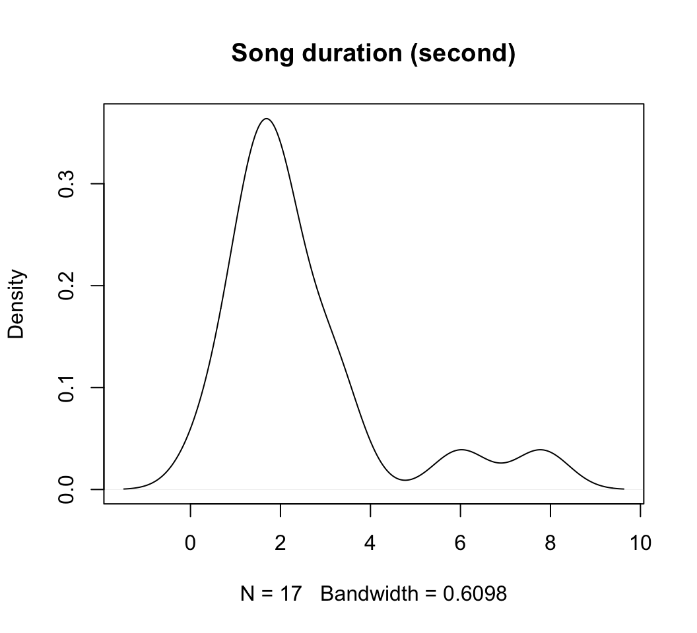

Data Documentation & Metadata
ACCE Data Management Course
17 February 2017
Documenting your data
@tomjwebb I see tons of spreadsheets that i don't understand anything (or the stduent), making it really hard to share.
— Erika Berenguer (@Erika_Berenguer) January 16, 2015
@tomjwebb Create a tab on your excel sheet that explains exactly what you did to get each part of the data and how you have treat it so far.
— Erika Berenguer (@Erika_Berenguer) January 16, 2015
@tomjwebb @SuseJohnston Write comments into any data or code file as if for yourself one year from now when you won't recall the details.
— Albert Cardona (@albertcardona) January 16, 2015
@srsupp @tomjwebb Document! Many sharing platforms exist (e.g. @figshare), but w/o documentation/metadata, research data aren't v. useful
— Jonathan Petters (@jon_petters) January 16, 2015
@tomjwebb @ScientificData “Document. Everything.” Data without documentation has no value.
— Sven Kochmann (@indianalytics) January 16, 2015
@tomjwebb Annotate, annotate, annotate!
— CanJFishAquaticSci (@cjfas) January 16, 2015
@tomjwebb Have good metadata so others can understand it/use it
— Nathan B Furey (@NBFurey) January 16, 2015
@Sal_Keith +1 Metadata essential & prerequisite for the new breed of data journals like @ScientificData or repos like @datadryad @tomjwebb
— Gavin Simpson (@ucfagls) January 16, 2015
Document all the metadata (including protocols).@tomjwebb
— Ward Appeltans (@WrdAppltns) January 16, 2015
You download a zip file of #OpenData. Apart from your data file(s), what else should it contain?
— Leigh Dodds (@ldodds) February 6, 2017
#otherpeoplesdata dream match!
imagine an open data set
It’s out there somewhere:
How would you locate it?
- what details would you need to know to determine relevance?
- what information would you need to know to use it?
Think about all you would neeed to understand someone else’s data. In 18 months YOU will be that other person with your own data.
metadata
Information that describes, explains, locates, or in some way makes it easier to find, access, and use a resource (in this case, data).

exercise 2:
introduce your data
prepare it to share it
Let’s start documenting your data!
- in pairs describe the who, what, when, where, why of your dataset.
- use the Data Reuse Checklist to guide your description.

metadata = data about data
Backbone of digital curation. Without it a digital resource may be irretrievable, unidentifiable or unusable.
Descriptive
- enables identification, location and retrieval of data, often includes use of controlled vocabularies for classification and indexing.
Technical
- describes the technical processes used to produce, or required to use a digital data object.
Administrative
- used to manage administrative aspects of the digital object e.g. intellectual property rights and acquisition.
This usually takes the form of a structured set of elements.
elements of metadata
Structured data files:
- readable by machines and humans, accessible through the web
controlled vocabularies eg. NERC Vocabulary server
- allows for connectivity of data

KEY TO SEARCH FUNCTION
By structuring & adhering to controlled vocabularies, data can be combined, accessed and searched!
Different communities develop different standards which define both the structure and content of metadata.
Ecological Metadata Language (EML)
last decade -> tremendous explosion of ecological and environmental data -> potential for broad-scale or synthetic research
But
extremely heterogeneous and complexity
dispersed across many separate repositories.
data are largely unorganized and inaccessible
Ecological Metadata Language (EML)
a metadata standard developed by and for the ecology discipline.
EML is a set of XML schema documents that allow for the structural expression of metadata.
harmonising ecological data
Wide adoption and use of EML will create exciting new opportunities for data discovery, access, integration and synthesis.
example EML
EML = extensible markup language: Emphasis on simplicity, generality, and usability across the Internet.
similar to html: what the web is made of!
## <eml packageId="eml.1.1" system="knb" xsi:schemaLocation="eml://ecoinformatics.org/eml-2.1.1 eml.xsd">
## <dataset>
## <title>Sample dataset Description</title>
## <creator id="23445" scope="document">
## <individualName>
## <surName>Smith</surName>
## </individualName>
## </creator>
## <creator id="23446" scope="document">
## <individualName>
## <surName>Smith</surName>
## </individualName>
## </creator>
## <additionalInfo>
## <para>My comments go here.</para>
## </additionalInfo>
## <intellectualRights>
## <section>
## <para>Anyone can use it.</para>
## </section>
## </intellectualRights>
## <distribution>
## <online>
## <connectionDefinition scope="document">
## <schemeName system="CAP">sde</schemeName>
## <description>
## <para>The SDE scheme used at CAP LTER</para>
## </description>
## <parameterDefinition>
## <name>hostname</name>
## <definition>The host</definition>
## <defaultValue>mohave.asu.edu</defaultValue>
## </parameterDefinition>
## <parameterDefinition>
## <name>databaseName</name>
## <definition>The name of the database or catalog</definition>
## </parameterDefinition>
## <parameterDefinition>
## <name>owner</name>
## <definition>The owner catalog</definition>
## <defaultValue>dbo</defaultValue>
## </parameterDefinition>
## </connectionDefinition>
## </online>
## </distribution>
## <purpose>
## <para>Provide data to the whole world.</para>
## </purpose>
## <contact>
## <individualName>
## <surName>Johnson</surName>
## </individualName>
## </contact>
## <contact>
## <references>23445</references>
## </contact>
## </dataset>
## </eml>Documenting your data
- Start at the very least by creating a metadata tab within your raw data spreadsheet
- Ideally set up a system of normalised tables see section 3 in this post and
READMEandvignettedocuments to manage and document metadata. - finally, when you’re ready to publish:
Example EML workflow
Bird Trait Networks project
I’m using data from a project in which we compiled large dataset on bird reproductive, morphological, physiological, life history and ecological traits across as many bird species as possible to perform a network analysis on associations between trait pairs.
Let’s use a simplified subset of the data to explore some of the concepts and tools from producing an eml
- all materials can be found here.
- I’ll include some dummy data sourced from the
emlpackage vignette on creating an EML to cover broader scope of data.
data
| species | max.altitude | dev.mode | courtship.feed.m | song.dur | breed.system |
|---|---|---|---|---|---|
| Acridotheres_tristis | NA | 2 | 0 | NA | 1 |
| Aix_galericulata | NA | 1 | NA | NA | 2 |
| Anas_americana | NA | 1 | NA | NA | 2 |
| Anas_clypeata | NA | 1 | NA | NA | 2 |
| Anthracothorax_nigricollis | NA | 2 | NA | NA | 2 |
| Anthus_hodgsoni | NA | 2 | NA | NA | 1 |
| Aphelocoma_coerulescens | NA | 2 | NA | NA | 4 |
| Aphelocoma_ultramarina | NA | 2 | NA | NA | NA |
| Ardea_cinerea | NA | 2 | NA | NA | 1 |
Like many real data sets, column headings are convenient for data entry and manipulation, but not particularly descriptive to a user not already familiar with this data.
More importantly, they don’t let us know what units they are measured in (or in the case of categorical / factor data like species names or life stages, what the factor abbreviations refer to). So let us take a moment to be more explicit:
EML rOpenScience package
We can store this information by creating EML files and explicity supply variable descriptions and units.

install.packages("EML")EML
functions in the package help build an eml object from modular elements
- eml
- dataset
- creator
- title
- publisher
- pubDate
- keywords
- abstract
- intellectualRights
- contact
- methods
- coverage
- geographicCoverage
- temporalCoverage
- taxonomicCoverage
- dataTable
- entityName
- entityDescription
- physical
- attributeListcreating an EML
start with dataTable
- dataTable
- entityName
- entityDescription
- physical
- attributeListWe will build this eml file from the bottom up, starting with the two main components of a dataTable indicated above:
attributeListphysical
We will then slip these two pieces into place inside a dataTable element, and slip that into our eml element along with the rest of the generic metadata
attributesList structure
we need to supply two data.frames
attributesfactors
and a vector of:
columnClass
- create a
attr_tblin which to complete all info required - use
eml_utils.Rfunctions to extractattributeListelements fromattr_tbl
library(RCurl)
eval(parse(text = getURL(
"https://raw.githubusercontent.com/annakrystalli/ACCE_RDM/master/R/eml_utils.R",
ssl.verifypeer = FALSE)))attributes df
The attributes data frame must use only the recognized column headers shown here. The attributes data frame must contain columns for required metadata. These are: For all data:
- attributeName (required, free text field)
- attributeDefinition (required, free text field)
- columnClasses (required,
"numeric","character","factor","ordered", or"Date", case sensitive)
columnClasses dependant attributes
- For
numeric(ratio or interval) data:- unit (required, see eml-unitTypeDefinitions and working with units)
- For
character(textDomain) data:- definition (required)
- For
dateTimedata:- formatString (required) e.g for date
11-03-2001formatString would be"DD-MM-YYYY"
- formatString (required) e.g for date
create attr_tbl shell
load data
dt <- read.csv("data/bird_trait_db-v0.1.csv")create
attr_tblshell from your data (dt)- use function
get_attr_shellfromeml_utils.R.
- use function
attr_shell <- get_attr_shell(dt)
str(attr_shell)## 'data.frame': 6 obs. of 11 variables:
## $ attributeName : chr "species" "max.altitude" "dev.mode" "courtship.feed.m" ...
## $ attributeDefinition: logi NA NA NA NA NA NA
## $ columnClasses : chr "character" "numeric" "numeric" "numeric" ...
## $ numberType : logi NA NA NA NA NA NA
## $ unit : logi NA NA NA NA NA NA
## $ minimum : logi NA NA NA NA NA NA
## $ maximum : logi NA NA NA NA NA NA
## $ formatString : logi NA NA NA NA NA NA
## $ definition : logi NA NA NA NA NA NA
## $ code : logi NA NA NA NA NA NA
## $ levels : logi NA NA NA NA NA NAcomplete attr_tbl
save shell
- write
attr_shellto.csv
write.csv(attr_shell, file = "data/attr_shell.csv")complete attr_tbl
- complete in excel and save to attr_tbl.csv
- read in completed attr_tbl.csv
attr_tbl <- read.csv(file = "data/attr_tbl.csv")attr_tbl
| attributeName | attributeDefinition | columnClasses | numberType | unit | minimum | maximum | formatString | definition | code | levels |
|---|---|---|---|---|---|---|---|---|---|---|
| species | species | character | NA | NA | NA | NA | NA | species | NA | NA |
| max.altitude | Maximum altitudinal distribution | numeric | integer | meter | NA | NA | NA | NA | NA | NA |
| dev.mode | Developmental mode | ordered | NA | NA | NA | NA | NA | NA | 1;2;3 | Altricial;Semiprecocial;Precocial |
| courtship.feed.m | Courtship feeding (by the male) | factor | NA | NA | NA | NA | NA | Courtship feeding (by the male) | 0;1 | FALSE;TRUE |
| song.dur | Song duration | numeric | real | second | 0 | NA | NA | NA | NA | NA |
| breed.system | Which adult(s) provides the majority of care: | factor | NA | NA | NA | NA | NA | Breeding system | 1;2;3;4;5 | Pair;Female;Male;Cooperative;Occassional |
- I use the columns
codeandlevelsto store information on factors. Use";"to separate code and level descriptions. These can be extracted byeml_utils.Rfunctionget_attr_factors()later on.
make attributes df
attributes <- extract_attr_tbl(attr_tbl)
str(attributes, max.level = 2)## 'data.frame': 6 obs. of 9 variables:
## $ attributeName : chr "species" "max.altitude" "dev.mode" "courtship.feed.m" ...
## $ attributeDefinition: chr "species" "Maximum altitudinal distribution" "Developmental mode" "Courtship feeding (by the male)" ...
## $ columnClasses : logi NA NA NA NA NA NA
## $ numberType : chr NA "integer" NA NA ...
## $ unit : chr NA "meter" NA NA ...
## $ minimum : int NA NA NA NA 0 NA
## $ maximum : logi NA NA NA NA NA NA
## $ formatString : logi NA NA NA NA NA NA
## $ definition : chr "species" NA NA "Courtship feeding (by the male)" ...make factors df
factors <- get_attr_factors(attr_tbl)
kable(head(factors, 9))| attributeName | code | definition |
|---|---|---|
| dev.mode | 1 | Altricial |
| dev.mode | 2 | Semiprecocial |
| dev.mode | 3 | Precocial |
| courtship.feed.m | 0 | FALSE |
| courtship.feed.m | 1 | TRUE |
| breed.system | 1 | Pair |
| breed.system | 2 | Female |
| breed.system | 3 | Male |
| breed.system | 4 | Cooperative |
make attributeList
library(EML)
attributeList <- set_attributes(attributes, factors, col_classes = attr_tbl$columnClasses)
str(attributeList, max.level = 2)## Formal class 'attributeList' [package "EML"] with 7 slots
## ..@ .Data : chr(0)
## ..@ schemaLocation:Formal class 'xml_attribute' [package "EML"] with 1 slot
## ..@ lang :Formal class 'xml_attribute' [package "EML"] with 1 slot
## ..@ slot_order :Formal class 'slot_order' [package "EML"] with 1 slot
## ..@ attribute :Formal class 'ListOfattribute' [package "EML"] with 1 slot
## ..@ references :Formal class 'references' [package "EML"] with 6 slots
## ..@ id :Formal class 'xml_attribute' [package "EML"] with 1 slotset physical
document a description of the file format itself.
physical <- set_physical("bird_trait_db-v0.1.csv")
physical## <physical>
## <objectName>bird_trait_db-v0.1.csv</objectName>
## <size unit="bytes"/>
## <dataFormat>
## <textFormat>
## <recordDelimiter>\n\r</recordDelimiter>
## <attributeOrientation>column</attributeOrientation>
## <simpleDelimited>
## <fieldDelimiter>,</fieldDelimiter>
## </simpleDelimited>
## </textFormat>
## </dataFormat>
## </physical>assemble dataTable
we can now assemble the dataTable element itself by creating a new dataTable class
dataTable <- new("dataTable",
entityName = "bird_trait_db-v0.1.csv",
entityDescription = "Subsample of bird trait database",
physical = physical,
attributeList = attributeList)str(dataTable, max.level = 2)## Formal class 'dataTable' [package "EML"] with 19 slots
## ..@ .Data : chr(0)
## ..@ schemaLocation :Formal class 'xml_attribute' [package "EML"] with 1 slot
## ..@ lang :Formal class 'xml_attribute' [package "EML"] with 1 slot
## ..@ slot_order :Formal class 'slot_order' [package "EML"] with 1 slot
## ..@ alternateIdentifier:Formal class 'ListOfalternateIdentifier' [package "EML"] with 1 slot
## ..@ entityName :Formal class 'entityName' [package "EML"] with 4 slots
## ..@ entityDescription :Formal class 'entityDescription' [package "EML"] with 4 slots
## ..@ physical :Formal class 'ListOfphysical' [package "EML"] with 1 slot
## ..@ coverage :Formal class 'coverage' [package "EML"] with 11 slots
## ..@ methods :Formal class 'methods' [package "EML"] with 7 slots
## ..@ additionalInfo :Formal class 'ListOfadditionalInfo' [package "EML"] with 1 slot
## ..@ attributeList :Formal class 'attributeList' [package "EML"] with 7 slots
## ..@ constraint :Formal class 'ListOfconstraint' [package "EML"] with 1 slot
## ..@ caseSensitive :Formal class 'caseSensitive' [package "EML"] with 4 slots
## ..@ numberOfRecords :Formal class 'numberOfRecords' [package "EML"] with 4 slots
## ..@ references :Formal class 'references' [package "EML"] with 6 slots
## ..@ id :Formal class 'xml_attribute' [package "EML"] with 1 slot
## ..@ system :Formal class 'xml_attribute' [package "EML"] with 1 slot
## ..@ scope :Formal class 'xml_attribute' [package "EML"] with 1 slotset coverage
set taxonomic coverage
Must either be a data.frame or list specifying taxonomic information on species in data.
Columns or list elements should contain rank names.
taxon_coverage <- read.csv("data/taxo.csv", stringsAsFactors = F)## # A tibble: 6 × 7
## KINGDOM PHYLUM CLASS ORDER FAMILY GENUS
## <chr> <chr> <chr> <chr> <chr> <chr>
## 1 Animalia Chordata Aves Passeriformes Sturnidae Acridotheres
## 2 Animalia Chordata Aves Anseriformes Anatidae Aix
## 3 Animalia Chordata Aves Anseriformes Anatidae Anas
## 4 Animalia Chordata Aves Anseriformes Anatidae Anas
## 5 Animalia Chordata Aves Apodiformes Trochilidae Anthracothorax
## 6 Animalia Chordata Aves Passeriformes Motacillidae Anthus
## # ... with 1 more variables: SPECIES <chr>temporal and spatial coverage
my example doesn’t have temporal or spatial coverage so I include some dummy information from the EML vignette.
geographicDescription <- "The Geographic region of the kelp bed data extends
along the California coast, down through the coast of Baja, Mexico: Central
California (Halfmoon Bay to Purisima Point), Southern California (Point
Arguello to the United States/Mexico border including the Channel Islands)
and Baja California (points south of the United States/Mexico border including
several offshore islands)"set coverage
- supply taxonomic information to argument
sci_names.
coverage <- set_coverage(begin = '2012-06-01', end = '2013-12-31',
sci_names = taxon_coverage,
geographicDescription = geographicDescription,
west = -122.44, east = -117.15,
north = 37.38, south = 30.00,
altitudeMin = 160, altitudeMaximum = 330,
altitudeUnits = "meter")eml_get(coverage, "geographicDescription")## [1] "The Geographic region of the kelp bed data extends \nalong the California coast, down through the coast of Baja, Mexico: Central \nCalifornia (Halfmoon Bay to Purisima Point), Southern California (Point \nArguello to the United States/Mexico border including the Channel Islands) \nand Baja California (points south of the United States/Mexico border including \nseveral offshore islands)"eml_get(coverage, "temporalCoverage")## An object of class "ListOftemporalCoverage"
## [[1]]
## <temporalCoverage>
## <rangeOfDates>
## <beginDate>
## <calendarDate>2012-06-01</calendarDate>
## </beginDate>
## <endDate>
## <calendarDate>2013-12-31</calendarDate>
## </endDate>
## </rangeOfDates>
## </temporalCoverage>create methods
document your protocols in a word .doc
Keep a dynamic document used to plan, record and write up methods. Again, for a more relevant example, I just include the example provided in the vignette. You can find a copy of the document here
methods_file <- system.file("examples/hf205-methods.docx", package = "EML")
methods_file## [1] "/Users/Anna/Library/R/3.3/library/EML/examples/hf205-methods.docx"methods <- set_methods(methods_file)
eml_get(methods, "methodStep")## An object of class "ListOfmethodStep"
## [[1]]
## <methodStep>
## <description>
## <section>
## <title>General Protocols</title>
## <para>
## Field methods. All experiments will be carried out in the greenhouse
## at Harvard Forest. We have developed an instrumentation system that
## allows us to collect continuous dissolved [O2] measurements:
## dedicated micro-probes (DO-166MT; Lazar Research Laboratories:
## http://www.shelfscientific.com/) connected to multiplexers and data
## loggers (AM16/32B multiplexer, CR-1000 datalogger and control system
## [Campbell Scientific: http://www.cambellsci.com]). The initial
## ecosystem composition in all experimental plants will be
## standardized by seeding each pitcher with a 10-ml inoculum of liquid
## collected from pitchers growing at Tom Swamp. In all experiments,
## prey will be supplied to pitchers as standardized aliquots of dried
## and finely ground bald-faced hornets (Dolichovespula maculata;
## Hymenoptera: Vespidae), which we collect in quantity throughout New
## England. Both hornets and ants (the latter are the dominant prey of
## S. purpurea) are hymenoptera, and have nearly identical C:N ratios
## (hornets: 3.97; common bog-dwelling ants [Tapinoma sessile and
## Myrmica lobifrons]: 3.37), but on average hornets have greater than
## 100 times the dry mass of these ants, and are easier to collect and
## process as a standardized food source. Additions of prey, either as
## large "pulses" or chronic "presses" are
## analogous to the enrichment and eutrophication that occur in aquatic
## "green" food webs in which phytoplankton abundance is
## boosted through addition of limiting nutrients. In "brown"
## food webs such as the Sarracenia microecosystem, detritus - not
## primary production - is at the base of the web, and our treatments
## boost this material as would happen through increases in arthropod
## prey capture78 or through nitrogen-enriched precipitation.
## </para>
## <para>
## Proteomic analysis. Proteomic profiles of microbial communities are
## determined after separating the microbial fraction from the pitcher
## fluid, prey, and other detritus. The microbial "pellet" is
## subjected to SDS-PAGE (sodium dodecyl sulfate polyacrylamide gel)
## electrophoresis; bands are cut out and digested in-gel with trypsin.
## Tryptic peptides are subjected to LC-MS/MS (liquid chromatography
## tandem mass spectrometry) for peptide and protein identification.
## Absolute abundance of peptides and proteins are quantified using
## AQUA (Absolute QUAntification) analysis109.
## </para>
## </section>
## <section>
## <title>Specific Experiments</title>
## <para>
## Experiment #1. Effects of nutrient enrichment on state changes and
## [O2] profiles. This experiment alters nutrient enrichment rates to
## characterize the [O2] profile and the transition to the anaerobic
## state. The experimental design is a one-way layout with 5 treatment
## groups: one control (no enrichment) and 4 enrichment levels (0.125,
## 0.25, 0.5, 1.0 mg prey added ml-1 d-1). One plant is assigned to
## each treatment group, and the entire set is replicated 6 times over
## successive weeks. [O2] is monitored continuously for 4 days to
## characterize state changes and tipping points under different
## enrichment rates. This experiment tracks a continuous [O2] profile
## but does not include proteomic analysis. The purpose of Experiment
## #1 is to identify an enrichment rate E that generates a long
## pre-tipping period before transition time T to the anaerobic state.
## This enrichment rate will be used in Experiments #2 - #4.
## </para>
## <para>
## Experiment #2. Identification of early intervention time and
## characterization of aerobic and anaerobic proteomes. This experiment
## will use the single enrichment rate E determined from Experiment #1
## and impose different intervention times I at which nutrient
## enrichment will be terminated. Thus, this experiment will identify
## the latest time I* at which it is possible to intervene and stop the
## transition to the anaerobic state by halting enrichment. The [O2]
## profile will again be monitored continuously over 10 days to measure
## the state of the system. From Experiment #1, the transition time T
## to the anaerobic state with no intervention will be known. We will
## use one control group (no prey addition) and ten levels of
## intervention time (all with the same enrichment rate E) as a
## proportion of T (0.1, 0.2, 0.3, 0.4, 0.5, 0.6, 0.7, 0.8, 0.9, 1.0).
## Six plants will be assigned randomly to each of the 11 treatments in
## a randomized one-way layout and [O2] profiles will be monitored
## continuously. In addition to the [O2] profiles, we will also
## characterize the protein profiles of aerobic and anaerobic pitchers
## in all 11 treatment groups at the end of the experiment.
## </para>
## <para>
## After the plants are harvested, we will create proteomic profiles of
## the predominantly bacterial portion (centrifuged pellet) of the
## pitcher fluid from each plant, as described in General Protocols.
## Thus, 66 separate pellet-fraction samples will be analyzed by
## SDS-PAGE. After examining the SDS-PAGE profiles, approximately ten
## proteins that show dynamic patterns consistent with state change and
## five that do not change will be cut from the gel, subjected to
## in-gel tryptic digestion and a portion of the tryptic peptides will
## be analyzed by LC-MS/MS. Using these data, we will choose three
## identified peptides from each protein for peptide synthesis such
## that each synthesized peptide contains stable isotope labels (AQUA
## peptides) to distinguish them by mass from the native peptides. We
## will then quantify all 45 of the native peptides from the original
## samples using a known amount of each AQUA peptide spiked into the
## tryptic digest. The AQUA analysis of proteins that do not show
## changes will be used for normalization between samples. These data
## will be used to independently identify the current state of the
## system and forecast the time-to-transition.
## </para>
## <para>
## We will use Sequest searches for initial identification of peptides;
## relevant scores including Xcorr and Delta Cn values will be given
## for each peptide. Other peptides will be identified by de novo
## sequencing using PepNovo; all PepNovo scores will likewise be given
## including any N- or C-terminal gaps. Mass error in ppm will be
## reported for each precursor ion. We will use standard multivariate
## analysis to search for distinctive proteomic profiles114 that
## characterize aerobic and anaerobic ecosystems, as well as ecosystems
## that developed with and without inputs of photosynthetic O2 and
## plant metabolites.
## </para>
## <para>
## Experiment #3. Identification of diagnostic proteins. Using
## Experiments #1 and 2, we will have identified an enrichment rate E
## with a long pre-tipping period and an intervention time I* before
## which mitigation and termination of enrichment will prevent
## eutrophication. Experiment #3 will characterize the mean and
## variance of the protein profile before and after I*. We are
## especially interested in identifying proteins that increase rapidly
## in abundance (or variance) well before the onset of flickering in
## [O2] and before the transition time T from the aerobic to the
## anaerobic state.
## </para>
## <para>
## A cohort of 100 plants all will be fed at rate E (determined from
## Experiment #1), with intervention time I* determined from Experiment
## #2, although no intervention will be used in this "press"
## experiment so that we can contrast proteins before and after the
## state change. At seven times before I* and three times after
## I<emphasis>, we will harvest 10 randomly chosen plants. At each
## prescribed harvest time, we will measure [O2] and collect samples
## from each plant for proteomic screening using both SDS-PAGE and AQUA
## analysis. This experiment will identify proteins that rise quickly
## in abundance during the pre- I</emphasis> period and can be used as
## early indicators of a future tipping point. Because different plants
## will be harvested at each time period, this is a one-way ANOVA
## design, with pre-and post- I* a priori contrasts. A randomization
## test will be used to determine whether variances in protein
## expression differ through time. During these analyses we will use
## the data from the AQUA peptides and from known amounts of protein
## standards, such as bovine serum albumin, to approximate the amount
## of protein in a given coomassie-stained SDS-PAGE gel band. The
## reason for doing this is to provide a fast "real-time"
## assay based just on expression in the SDS-PAGE. This rapid assay
## will be used in Experiment #4.
## </para>
## <para>
## Experiment # 4. Proof-of-application. This experiment will provide a
## benchmark test of our methods and their ability to correctly
## identify tipping points. A cohort of 100 plants will each be fitted
## with [O2] probes and started on the enrichment regime. Two times per
## day, we will collect 3 plants each, pool their contents, and conduct
## a rapid screen in the lab with SDS-PAGE for the diagnostic proteins
## that were identified in Experiment #3. We will use the protein
## expression in the gel to delineate an "early" and a
## "late" mitigation strategy. As soon as diagnostic proteins
## measured in the SDS-gels are at abundances that signal we are at
## 0.5×I* - approximately one-half of the way to the latest
## intervention time - we will randomly select one third of the
## remaining plants for mitigation and termination of enrichment (the
## "early" mitigation strategy). We will continue to harvest
## plants from the remainder of the cohort and monitor proteins. As
## soon as diagnostic proteins signal we are at 0.75 times I*, we will
## randomly select one half of the remaining plants for mitigation and
## termination of enrichment (the "late" mitigation
## strategy). The remaining plants (approximately one sixth to one
## third of the original cohort) will continue to be enriched. We will
## monitor [O2] in all 3 groups (no-mitigation control, early
## mitigation, late mitigation) until all plants reach a new [O2]
## equilibrium. If the protein markers are successful, the proportion
## of food webs that remain aerobic will be significantly higher in the
## two mitigation treatments than in the no-mitigation control.
## </para>
## </section>
## </description>
## </methodStep>create person
it’s important to be able to trace back the creator / maintainer of a dataset
R_person <- as.person("Anna Krystalli <fakeaddress@email.com>")
anna <-as(R_person, "creator")HF_address <- new("address",
deliveryPoint = "Dept. Animal & Plant Science",
city = "Sheffield",
administrativeArea = "South Yorkshire",
postalCode = "S10 2TN",
country = "UK")contact <-
new("contact",
individualName = anna@individualName,
electronicMail = anna@electronicMailAddress,
address = HF_address,
organizationName = "University of Sheffield",
phone = "000-000-0000")contact## <contact>
## <individualName>
## <givenName>Anna</givenName>
## <surName>Krystalli</surName>
## </individualName>
## <organizationName>University of Sheffield</organizationName>
## <address>
## <deliveryPoint>Dept. Animal & Plant Science</deliveryPoint>
## <city>Sheffield</city>
## <administrativeArea>South Yorkshire</administrativeArea>
## <postalCode>S10 2TN</postalCode>
## <country>UK</country>
## </address>
## <phone>000-000-0000</phone>
## <electronicMailAddress>fakeaddress@email.com</electronicMailAddress>
## </contact>create a keywordSet
keywordSet <-
c(new("keywordSet",
keywordThesaurus = "LTER controlled vocabulary",
keyword = c("birds",
"animals",
"vertebrates")),
new("keywordSet",
keywordThesaurus = "trait categories",
keyword = c("life history", "ecology", "breeding biology", "mating system", "macroecology"))
)final details
pubDate <- "2017"
title <- "Sub sample of bird macroecological trait variables"
abstract <- "The primary goal of this project is to compile a working example of an EML dataset using a subsample of the data from the bird trait networks project. The original dataset was compiled to examing the network structure between pair of a large number of traits. Additional files and objects were created to demonsted a broader example to ACCE research students"
intellectualRights <- "This dataset is released to the public and may be freely
downloaded. Please keep the designated Contact person informed of any
plans to use the dataset. Consultation or collaboration with the original
investigators is strongly encouraged. Publications and data products
that make use of the dataset must include proper acknowledgement"- or load abstract from a word file again by specifying the path to the .docx e.g.
abstract <- as(set_TextType(abstract_file), "abstract")create dataset
dataset <- new("dataset",
title = title,
creator = anna,
pubDate = pubDate,
intellectualRights = intellectualRights,
abstract = abstract,
keywordSet = keywordSet,
coverage = coverage,
contact = contact,
methods = methods,
dataTable = dataTable)This step is modular. Remove any arguments you may have skipped.
create eml
create eml class object
library(uuid)
eml <- new("eml",
packageId = uuid::UUIDgenerate(),
system = "uuid", # type of identifier
dataset = dataset)validate eml
eml_validate(eml)## [1] TRUEsuccess!
parsing your EML file
eg access factors from attributes:
dtT <- eml_get(eml, "dataTable")
attrs <- eml_get(dtT, "attributeList")
attrs$factors## attributeName code definition
## 1 dev.mode 1 Altricial
## 2 dev.mode 2 Semiprecocial
## 3 dev.mode 3 Precocial
## 4 courtship.feed.m 0 FALSE
## 5 courtship.feed.m 1 TRUE
## 6 breed.system 1 Pair
## 7 breed.system 2 Female
## 8 breed.system 3 Male
## 9 breed.system 4 Cooperative
## 10 breed.system 5 Occassionalsave eml
write_eml(eml, "example.xml")## [1] "example.xml"Exercise 3:
create an eml
create your own eml
get organised
- Add your data to the
data/folder. - create a new script eg
create_eml.R - load your data
- have a look at it with
Viewer(data) - create an
attr_shelland complete it - write a sample
methods .docxdocument - follow the steps to create your
eml.
The materials you create can form the basis for your RDM.
sharing data


identify repositories
these will dictate the appropriate controlled vocabulary and data structure.
re3data.org

@tomjwebb Think early about where you will archive your data. Ask repository for advice on format & metadata standards @Sal_Keith @ucfagls
— Scientific Data (@ScientificData) January 16, 2015
using metadata in workflows
metadata can be extremely useful in analyses!
- accessing distributional/ statistical properties of variables.
- accessing the levels of factor data.
- accessing units and more informative descriptions for presentation.
eg. longer descriptions of variables, units and other useful metadata can be stored as part of dataframes in R using the function attributes()
Uses of metadata in analysis
All r object have attributes and basic data.frames have 3. These can be accessed by using the same function.
str(attributes(dt))## List of 3
## $ names : chr [1:6] "species" "max.altitude" "dev.mode" "courtship.feed.m" ...
## $ class : chr "data.frame"
## $ row.names: int [1:100] 1 2 3 4 5 6 7 8 9 10 ...Appending metadata as attributes
So lets append some metadata to the dt data.frame as attributes. Indexing using the match function ensures the attributes are stores in order that match match the variable names
descr.att <- attr_tbl$attributeDefinition[match(names(dt), attr_tbl$attributeName)]
names(descr.att) <- names(dt)
attributes(dt)$descr <- descr.att
units.att <- attr_tbl$unit[match(names(dt), attr_tbl$attributeName)]
names(units.att) <- names(dt)
attributes(dt)$units <- units.attstr(attributes(dt))## List of 5
## $ names : chr [1:6] "species" "max.altitude" "dev.mode" "courtship.feed.m" ...
## $ class : chr "data.frame"
## $ row.names: int [1:100] 1 2 3 4 5 6 7 8 9 10 ...
## $ descr : Named chr [1:6] "species" "Maximum altitudinal distribution" "Developmental mode" "Courtship feeding (by the male)" ...
## ..- attr(*, "names")= chr [1:6] "species" "max.altitude" "dev.mode" "courtship.feed.m" ...
## $ units : Named chr [1:6] NA "meter" NA NA ...
## ..- attr(*, "names")= chr [1:6] "species" "max.altitude" "dev.mode" "courtship.feed.m" ...Accessing attributes
So let’s go ahead and make use of some of those attributes. There’s a few ways they can be accessed. Say we want the descr attribute for all variables
attr(dt, "descr")## species
## "species"
## max.altitude
## "Maximum altitudinal distribution"
## dev.mode
## "Developmental mode"
## courtship.feed.m
## "Courtship feeding (by the male)"
## song.dur
## "Song duration"
## breed.system
## "Which adult(s) provides the majority of care:"Accessing attributes
So let’s go ahead and make use of some of those attributes. There’s a few ways they can be accessed. Say we want the descr attribute for all variables
attributes(dt)$descr## species
## "species"
## max.altitude
## "Maximum altitudinal distribution"
## dev.mode
## "Developmental mode"
## courtship.feed.m
## "Courtship feeding (by the male)"
## song.dur
## "Song duration"
## breed.system
## "Which adult(s) provides the majority of care:"Working with attributes
Let’s make an axis label by combining the description and unit attributes using the paste function.
descr <- attributes(dt)$descr["song.dur"]
unit <- attributes(dt)$unit["song.dur"]
label <- paste(descr, " (", unit, ")", sep = "")
plot(density(na.omit(dt[,"song.dur"])), main = label)